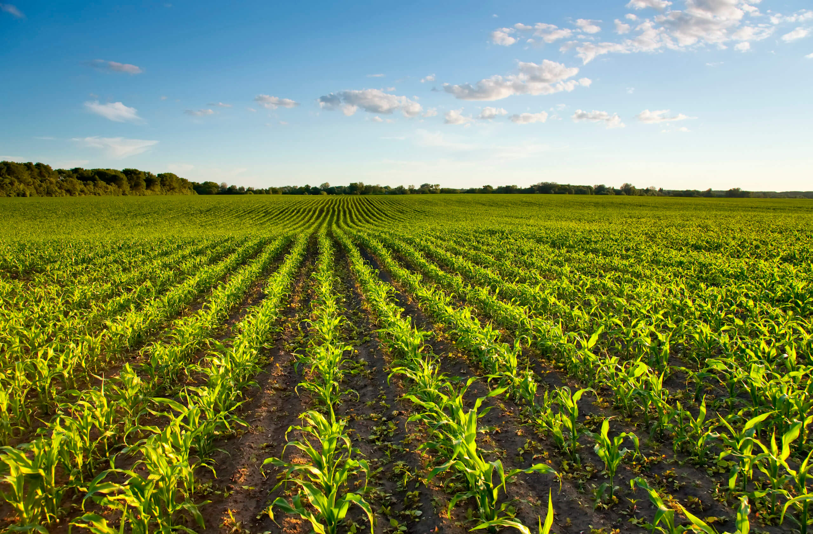
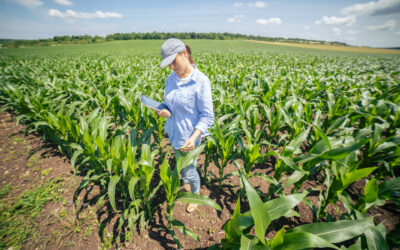
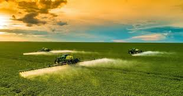

agricultura


A agricultura no Paraná é uma das atividades econômicas mais importantes do estado, com destaque para a produção de grãos como soja, milho e trigo. .
O Paraná é um dos maiores produtores de grãos do Brasil, e a agricultura é um fator fundamental para o desenvolvimento econômico e social da região.

O estado é o segundo maior produtor nacional de milho, com quase 15,6 milhões de toneladas colhidas em 2022. Também ocupa a segunda posição nacional no cultivo de batata, colhendo 778,3 mil toneladas.

Já a soja, que é a lavoura mais cultivada no Paraná, alcançou a terceira maior produção nacional em 2022.